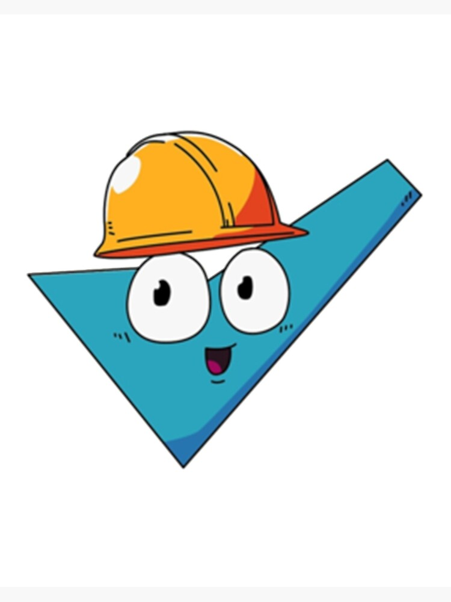
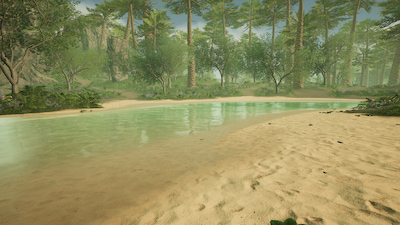
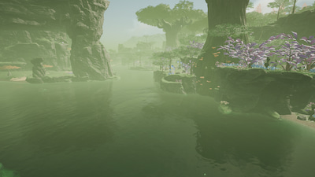
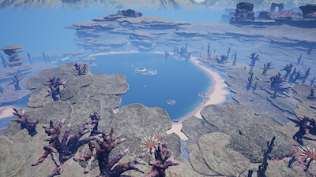
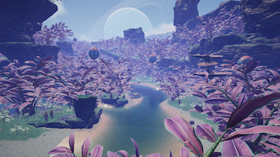
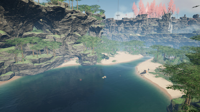

Our purpose is to satisfy your sense of adventure. Kittens and Puppies not included

Our purpose is to satisfy your sense of adventure. Kittens and Puppies not included
The parent company of Ficsit has a mission of saving lives. We send Pioneers to other worlds to complete Project Assembly. While we were at it, we thought the Pioneers would like to go rafting.

Satisfactory WWR is a small company dedicated to bring smiles to faces and long lasting memories to the whole family. We started as a local group that loved rafting in March 19, 2019 and have grown to become the best white water rafting on MASSAGE-2(A-B)b.




